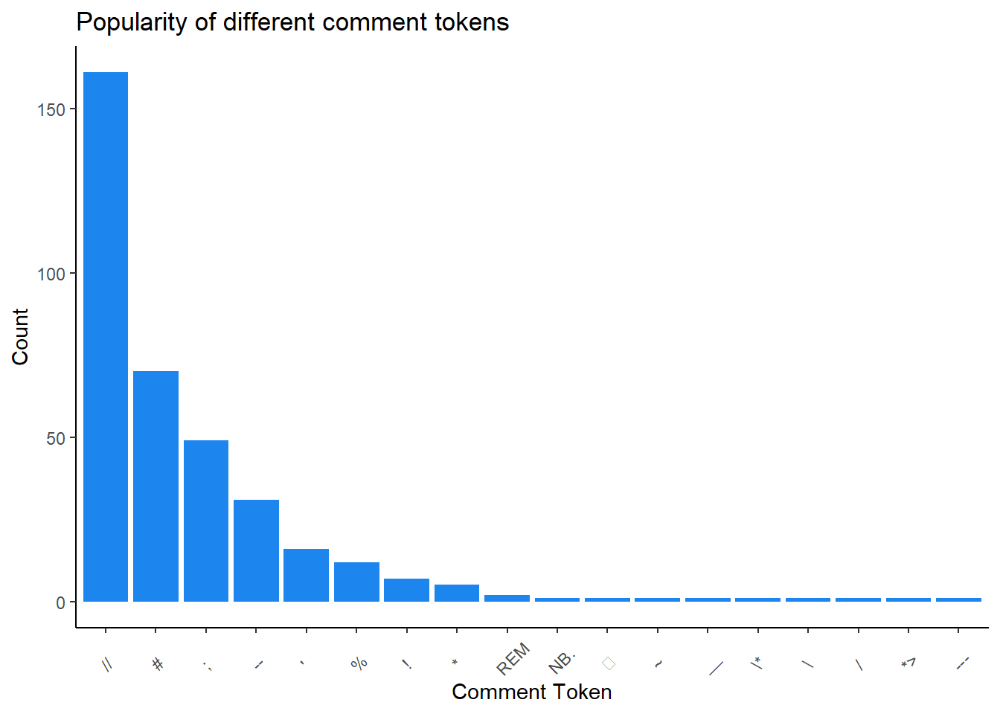
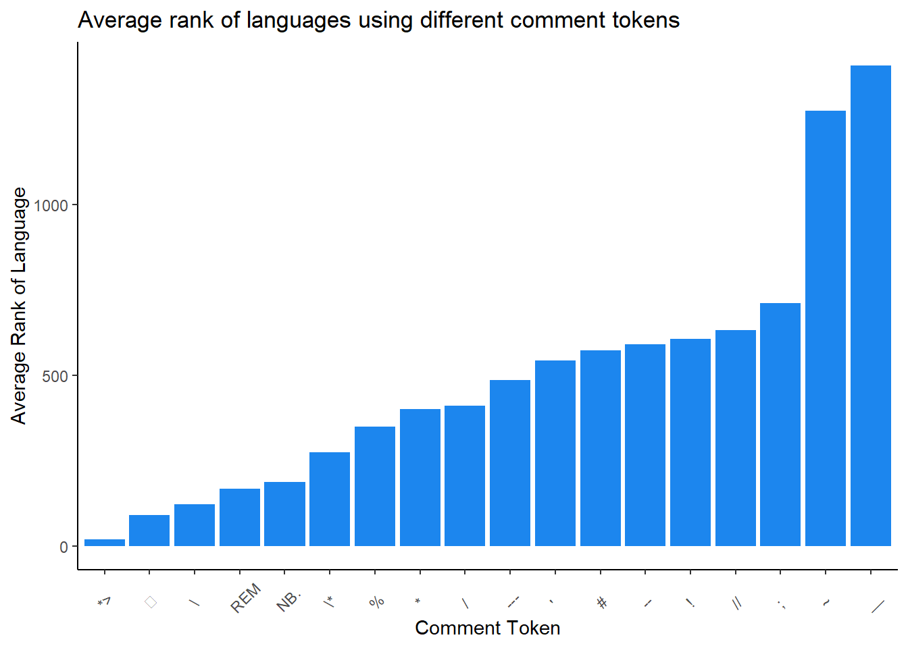
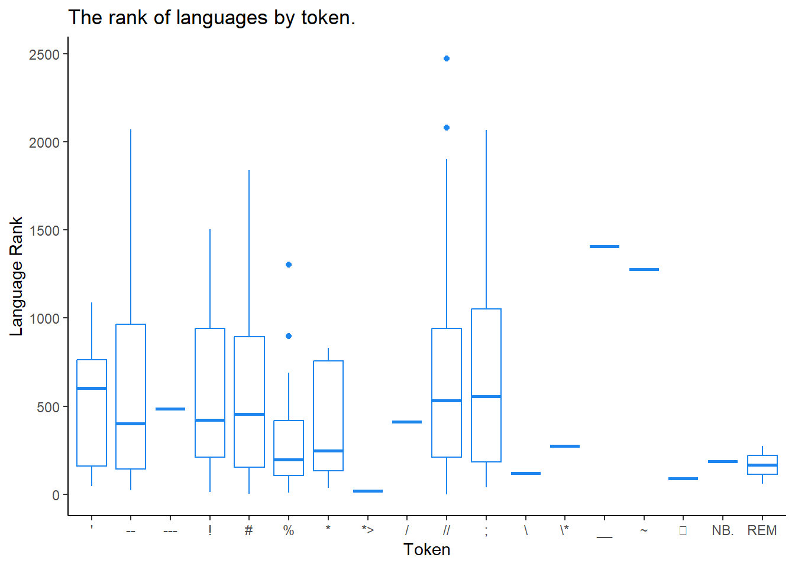
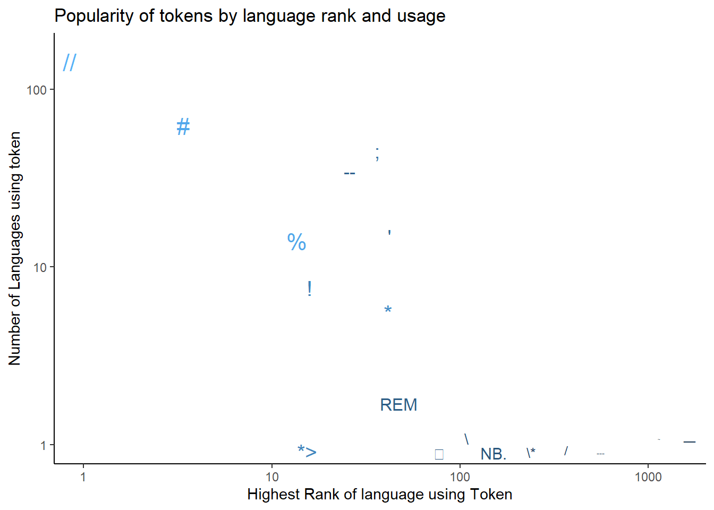
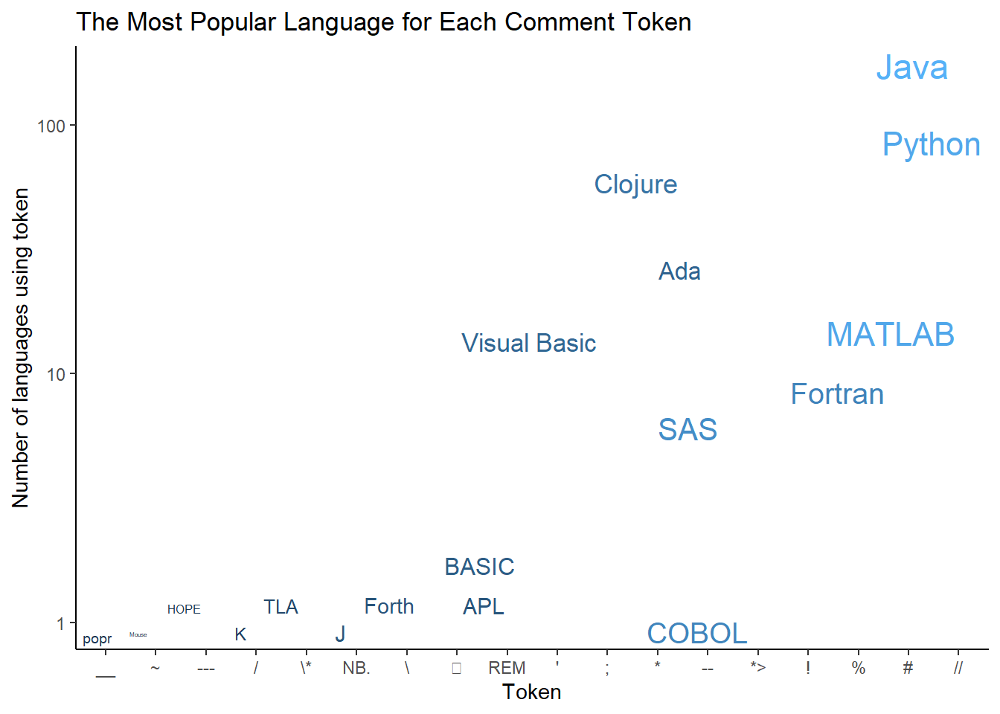
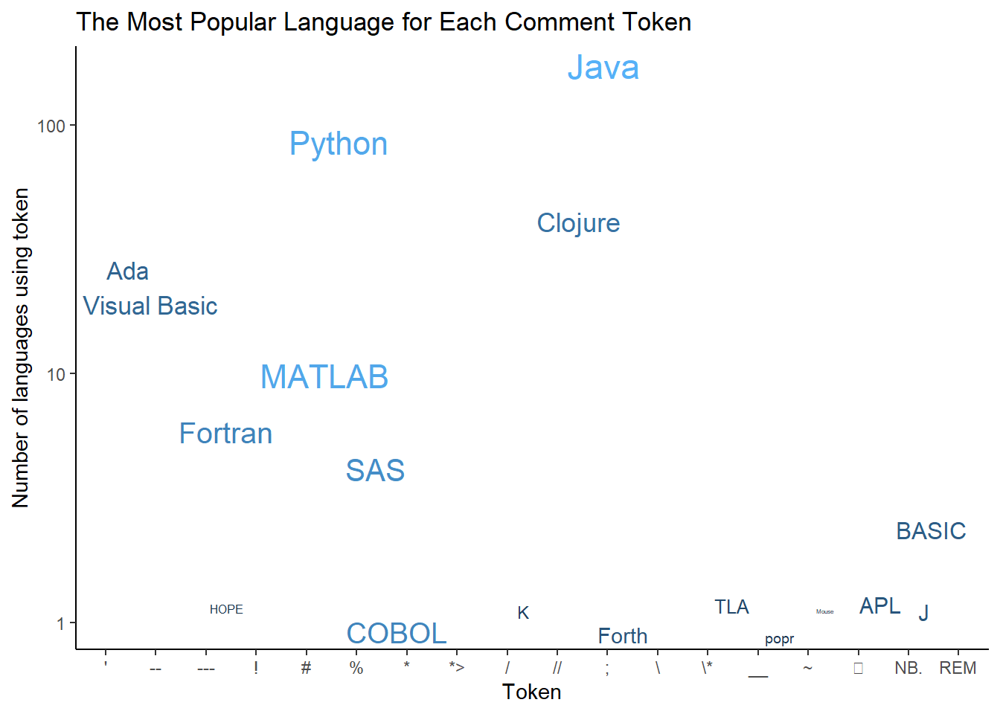

library(tidytuesdayR)
library(tidyverse)
library(skimr)
library(ggthemes)
library(gt)
library(ggrepel)TidyTuesday Week 12: Programming Languages
R
TidyTuesday
R-code
Code-Along
TidyTuesday: How to comment in Various Programming Languages
This is my first attempt at Tidy Tuesday. The dataset today is about Programming Languages. The sample visualizations are about the comment codes.
Load the data first. There has been some cleaning done as outlined on the TidyTuesday github page.
# Get the Data
# Read in with tidytuesdayR package
# This loads the readme and all the datasets for the week of interest
# Either ISO-8601 date or year/week works!
#tuesdata <- tidytuesdayR::tt_load('2023-03-21')
tuesdata <- tidytuesdayR::tt_load(2023, week = 12)
languages <- tuesdata$languagesFirst, let’s look at how complete the data is. The skimr package produces nice summary information about the variables and their completeness.
skim(languages)| Name | languages |
| Number of rows | 4303 |
| Number of columns | 49 |
| _______________________ | |
| Column type frequency: | |
| character | 21 |
| logical | 4 |
| numeric | 24 |
| ________________________ | |
| Group variables | None |
Variable type: character
| skim_variable | n_missing | complete_rate | min | max | empty | n_unique | whitespace |
|---|---|---|---|---|---|---|---|
| pldb_id | 0 | 1.00 | 1 | 52 | 0 | 4303 | 0 |
| title | 0 | 1.00 | 1 | 56 | 0 | 4267 | 0 |
| description | 3480 | 0.19 | 4 | 2273 | 0 | 811 | 0 |
| type | 0 | 1.00 | 2 | 27 | 0 | 40 | 0 |
| creators | 3203 | 0.26 | 2 | 253 | 0 | 985 | 0 |
| website | 2928 | 0.32 | 13 | 131 | 0 | 1368 | 0 |
| domain_name | 3588 | 0.17 | 6 | 32 | 0 | 700 | 0 |
| reference | 2314 | 0.46 | 15 | 251 | 0 | 1955 | 0 |
| github_repo | 3402 | 0.21 | 25 | 73 | 0 | 897 | 0 |
| github_repo_description | 3438 | 0.20 | 4 | 419 | 0 | 853 | 0 |
| github_language | 3829 | 0.11 | 1 | 30 | 0 | 474 | 0 |
| github_language_tm_scope | 3837 | 0.11 | 4 | 34 | 0 | 361 | 0 |
| github_language_type | 3837 | 0.11 | 4 | 11 | 0 | 4 | 0 |
| github_language_ace_mode | 3838 | 0.11 | 1 | 16 | 0 | 96 | 0 |
| github_language_file_extensions | 3833 | 0.11 | 1 | 606 | 0 | 466 | 0 |
| wikipedia | 2731 | 0.37 | 32 | 104 | 0 | 1566 | 0 |
| wikipedia_summary | 2884 | 0.33 | 17 | 6741 | 0 | 1407 | 0 |
| wikipedia_related | 3145 | 0.27 | 1 | 1761 | 0 | 1059 | 0 |
| line_comment_token | 3831 | 0.11 | 1 | 7 | 0 | 23 | 0 |
| origin_community | 1190 | 0.72 | 3 | 305 | 0 | 2232 | 0 |
| file_type | 3213 | 0.25 | 2 | 6 | 0 | 4 | 0 |
Variable type: logical
| skim_variable | n_missing | complete_rate | mean | count |
|---|---|---|---|---|
| features_has_comments | 3683 | 0.14 | 1.00 | TRU: 617, FAL: 3 |
| features_has_semantic_indentation | 3722 | 0.14 | 0.11 | FAL: 516, TRU: 65 |
| features_has_line_comments | 3765 | 0.13 | 0.96 | TRU: 517, FAL: 21 |
| is_open_source | 3792 | 0.12 | 0.89 | TRU: 453, FAL: 58 |
Variable type: numeric
| skim_variable | n_missing | complete_rate | mean | sd | p0 | p25 | p50 | p75 | p100 | hist |
|---|---|---|---|---|---|---|---|---|---|---|
| appeared | 0 | 1.00 | 1991.11 | 111.44 | -2000 | 1984.00 | 1997.0 | 2012.00 | 2023 | ▁▁▁▁▇ |
| domain_name_registered | 3801 | 0.12 | 2011.33 | 7.02 | 1990 | 2007.00 | 2013.0 | 2017.00 | 2023 | ▁▃▃▇▆ |
| isbndb | 3217 | 0.25 | 7.71 | 33.16 | 0 | 0.00 | 0.0 | 2.00 | 400 | ▇▁▁▁▁ |
| book_count | 0 | 1.00 | 2.08 | 17.34 | 0 | 0.00 | 0.0 | 0.00 | 401 | ▇▁▁▁▁ |
| semantic_scholar | 3545 | 0.18 | 3.79 | 8.32 | 0 | 0.00 | 0.0 | 3.00 | 52 | ▇▁▁▁▁ |
| language_rank | 0 | 1.00 | 2151.00 | 1242.31 | 0 | 1075.50 | 2151.0 | 3226.50 | 4302 | ▇▇▇▇▇ |
| github_repo_stars | 3414 | 0.21 | 2127.40 | 7554.02 | 0 | 29.00 | 194.0 | 1071.00 | 88526 | ▇▁▁▁▁ |
| github_repo_forks | 3417 | 0.21 | 261.29 | 1203.00 | 0 | 2.25 | 16.0 | 91.50 | 23732 | ▇▁▁▁▁ |
| github_repo_updated | 3418 | 0.21 | 2021.39 | 1.76 | 2012 | 2022.00 | 2022.0 | 2022.00 | 2023 | ▁▁▁▁▇ |
| github_repo_subscribers | 3418 | 0.21 | 62.34 | 200.88 | 0 | 4.00 | 13.0 | 44.00 | 2910 | ▇▁▁▁▁ |
| github_repo_created | 3425 | 0.20 | 2015.84 | 3.48 | 2006 | 2013.00 | 2016.0 | 2019.00 | 2022 | ▁▅▇▇▇ |
| github_repo_issues | 3518 | 0.18 | 123.03 | 546.26 | 0 | 1.00 | 9.0 | 61.00 | 9522 | ▇▁▁▁▁ |
| github_repo_first_commit | 3567 | 0.17 | 2014.74 | 4.99 | 1987 | 2012.00 | 2015.0 | 2018.00 | 2022 | ▁▁▁▆▇ |
| github_language_repos | 3833 | 0.11 | 197134.67 | 1226900.57 | 0 | 91.25 | 725.5 | 7900.25 | 16046489 | ▇▁▁▁▁ |
| wikipedia_daily_page_views | 2837 | 0.34 | 227.13 | 783.55 | -1 | 9.00 | 24.0 | 99.00 | 13394 | ▇▁▁▁▁ |
| wikipedia_backlinks_count | 2877 | 0.33 | 318.55 | 1635.29 | 1 | 13.00 | 39.0 | 126.00 | 34348 | ▇▁▁▁▁ |
| wikipedia_page_id | 2893 | 0.33 | 9167847.21 | 13506832.90 | 928 | 375153.75 | 2114700.5 | 12321223.00 | 63063548 | ▇▁▁▁▁ |
| wikipedia_appeared | 2958 | 0.31 | 1991.14 | 17.03 | 1830 | 1980.00 | 1994.0 | 2005.00 | 2019 | ▁▁▁▃▇ |
| wikipedia_created | 3040 | 0.29 | 2005.75 | 3.77 | 2001 | 2003.00 | 2005.0 | 2007.00 | 2020 | ▇▇▂▁▁ |
| wikipedia_revision_count | 3130 | 0.27 | 330.43 | 813.26 | 1 | 35.00 | 84.0 | 242.00 | 10104 | ▇▁▁▁▁ |
| last_activity | 0 | 1.00 | 2000.62 | 84.60 | -900 | 1992.00 | 2006.0 | 2021.00 | 2023 | ▁▁▁▁▇ |
| number_of_users | 0 | 1.00 | 13771.26 | 227712.95 | 0 | 0.00 | 20.0 | 230.00 | 7179119 | ▇▁▁▁▁ |
| number_of_jobs | 0 | 1.00 | 422.18 | 12572.99 | 0 | 0.00 | 0.0 | 0.00 | 771996 | ▇▁▁▁▁ |
| central_package_repository_count | 1482 | 0.66 | 0.00 | 0.00 | 0 | 0.00 | 0.0 | 0.00 | 0 | ▁▁▇▁▁ |
The data is pretty incomplete. Only 9 of the 49 variables are fully complete. The line comment token is only 0.110 complete and the has comments is only 0.144 complete. This variable has only 3 false values; it is likely that the missing data is skewed towards false. It is more likely that you’d complete this entry if there were a comment, than if there weren’t. It is also possible that the cleaning and prep done to prepare the #TidyTuesday dataset removed some entries which did have FALSE values for the comments.
There are some funny entries that appeared in the skim report, like -2000 as the year the earliest language appeared. It turns out this is Babylonian numerals, so it probably correct. This does show there is a lot more than computer languages in this dataset though.
Looking through the variables, I see there is a “type” in the data dictionary, and it appears that “pl” means programming language. So let’s filter for that. (I couldn’t find an explanation of this variable on https://pldb.com/) It is used on various pages, but I couldn’t find the definition of the types.
Also, rank starts at 0, and I’d like it to start at 1.
programming_lang <- languages %>%
filter(type == 'pl') %>%
select(-starts_with("github"), -starts_with("wikipedia"),
-description, -creators, -(website:semantic_scholar)) %>%
mutate(language_rank = language_rank + 1)
skim(programming_lang)| Name | programming_lang |
| Number of rows | 3368 |
| Number of columns | 16 |
| _______________________ | |
| Column type frequency: | |
| character | 6 |
| logical | 4 |
| numeric | 6 |
| ________________________ | |
| Group variables | None |
Variable type: character
| skim_variable | n_missing | complete_rate | min | max | empty | n_unique | whitespace |
|---|---|---|---|---|---|---|---|
| pldb_id | 0 | 1.00 | 1 | 52 | 0 | 3368 | 0 |
| title | 0 | 1.00 | 1 | 54 | 0 | 3347 | 0 |
| type | 0 | 1.00 | 2 | 2 | 0 | 1 | 0 |
| line_comment_token | 3002 | 0.11 | 1 | 3 | 0 | 18 | 0 |
| origin_community | 883 | 0.74 | 3 | 176 | 0 | 1825 | 0 |
| file_type | 2609 | 0.23 | 4 | 4 | 0 | 1 | 0 |
Variable type: logical
| skim_variable | n_missing | complete_rate | mean | count |
|---|---|---|---|---|
| features_has_comments | 2886 | 0.14 | 1.00 | TRU: 482 |
| features_has_semantic_indentation | 2917 | 0.13 | 0.09 | FAL: 410, TRU: 41 |
| features_has_line_comments | 2954 | 0.12 | 0.97 | TRU: 401, FAL: 13 |
| is_open_source | 2984 | 0.11 | 0.85 | TRU: 328, FAL: 56 |
Variable type: numeric
| skim_variable | n_missing | complete_rate | mean | sd | p0 | p25 | p50 | p75 | p100 | hist |
|---|---|---|---|---|---|---|---|---|---|---|
| appeared | 0 | 1.00 | 1994.16 | 17.34 | 1948 | 1982.0 | 1994.0 | 2010.0 | 2022 | ▁▅▇▇▇ |
| language_rank | 0 | 1.00 | 2296.75 | 1249.08 | 1 | 1243.5 | 2334.5 | 3423.5 | 4303 | ▆▆▆▆▇ |
| last_activity | 0 | 1.00 | 2002.04 | 17.91 | 1951 | 1989.0 | 2005.0 | 2019.0 | 2023 | ▁▂▃▆▇ |
| number_of_users | 0 | 1.00 | 10793.85 | 190197.19 | 0 | 0.0 | 15.0 | 165.0 | 5962666 | ▇▁▁▁▁ |
| number_of_jobs | 0 | 1.00 | 160.22 | 2692.65 | 0 | 0.0 | 0.0 | 0.0 | 85206 | ▇▁▁▁▁ |
| central_package_repository_count | 939 | 0.72 | 0.00 | 0.00 | 0 | 0.0 | 0.0 | 0.0 | 0 | ▁▁▇▁▁ |
This now produces a dataset with 0.143 completeness for features_has_comments. All non-missing entries are TRUE, which again suggests that FALSE is over represented in the missing data.
Let’s only look at the programming languages that have data for comments.
programming_lang <- programming_lang %>%
filter(features_has_comments == TRUE)
skim(programming_lang)| Name | programming_lang |
| Number of rows | 482 |
| Number of columns | 16 |
| _______________________ | |
| Column type frequency: | |
| character | 6 |
| logical | 4 |
| numeric | 6 |
| ________________________ | |
| Group variables | None |
Variable type: character
| skim_variable | n_missing | complete_rate | min | max | empty | n_unique | whitespace |
|---|---|---|---|---|---|---|---|
| pldb_id | 0 | 1.00 | 1 | 35 | 0 | 482 | 0 |
| title | 0 | 1.00 | 1 | 45 | 0 | 481 | 0 |
| type | 0 | 1.00 | 2 | 2 | 0 | 1 | 0 |
| line_comment_token | 120 | 0.75 | 1 | 3 | 0 | 18 | 0 |
| origin_community | 112 | 0.77 | 3 | 105 | 0 | 311 | 0 |
| file_type | 146 | 0.70 | 4 | 4 | 0 | 1 | 0 |
Variable type: logical
| skim_variable | n_missing | complete_rate | mean | count |
|---|---|---|---|---|
| features_has_comments | 0 | 1.00 | 1.00 | TRU: 482 |
| features_has_semantic_indentation | 57 | 0.88 | 0.05 | FAL: 405, TRU: 20 |
| features_has_line_comments | 71 | 0.85 | 0.97 | TRU: 400, FAL: 11 |
| is_open_source | 305 | 0.37 | 0.91 | TRU: 161, FAL: 16 |
Variable type: numeric
| skim_variable | n_missing | complete_rate | mean | sd | p0 | p25 | p50 | p75 | p100 | hist |
|---|---|---|---|---|---|---|---|---|---|---|
| appeared | 0 | 1.00 | 2000.17 | 14.07 | 1957 | 1991.00 | 2003.0 | 2011.00 | 2022 | ▁▂▆▇▇ |
| language_rank | 0 | 1.00 | 656.10 | 559.75 | 1 | 201.25 | 515.5 | 997.25 | 2994 | ▇▃▂▁▁ |
| last_activity | 0 | 1.00 | 2016.20 | 8.27 | 1967 | 2011.00 | 2022.0 | 2022.00 | 2023 | ▁▁▁▂▇ |
| number_of_users | 0 | 1.00 | 62892.08 | 462314.18 | 0 | 112.00 | 437.5 | 1615.25 | 5962666 | ▇▁▁▁▁ |
| number_of_jobs | 0 | 1.00 | 971.30 | 6489.83 | 0 | 0.00 | 0.0 | 0.00 | 85206 | ▇▁▁▁▁ |
| central_package_repository_count | 136 | 0.72 | 0.00 | 0.00 | 0 | 0.00 | 0.0 | 0.00 | 0 | ▁▁▇▁▁ |
This subset is still moderately incomplete for information about comments. Only 75% of the data has the type of comment entered (#, //, etc). 86% of the entries are completed for “feature_has_line_comments” which indicates if comments must occupy a single line or if they can be made inline.
programming_lang %>% filter(is.na(line_comment_token) == FALSE) %>%
group_by(line_comment_token) %>%
count(line_comment_token) %>%
ggplot(aes(fct_rev(fct_reorder(line_comment_token, n)), n)) +
geom_col(fill = "dodgerblue2") +
ylab("Count") +
xlab("Comment Token") +
ggtitle("Popularity of different comment tokens") +
theme_classic() +
theme(axis.text.x = element_text(angle = 45, vjust = 0.25, hjust = 0.25))
Let’s make a nice table of the popular comment types.
# | label: table-tokens
programming_lang2 <- programming_lang %>%
filter(is.na(line_comment_token) == FALSE) %>%
count(line_comment_token, sort = TRUE)
programming_lang2 %>%
gt() %>%
tab_header(title = "Most Common Comment Tokens") %>%
cols_label(line_comment_token = "Token", n = "# of Languages that use token")| Most Common Comment Tokens | |
| Token | # of Languages that use token |
|---|---|
| // | 161 |
| # | 70 |
| ; | 49 |
| -- | 31 |
| ' | 16 |
| % | 12 |
| ! | 7 |
| * | 5 |
| REM | 2 |
| *> | 1 |
| --- | 1 |
| / | 1 |
| NB. | 1 |
| \ | 1 |
| \* | 1 |
| __ | 1 |
| ~ | 1 |
| ⍝ | 1 |
There is a language rank, which measures the popularity of the language based on signals such as number of users and number of jobs. Let’s see the average rank of languages for each token.
programming_lang %>% filter(is.na(line_comment_token) == FALSE) %>%
group_by(line_comment_token) %>%
summarize(avg_rank = mean(language_rank)) %>%
ggplot(aes((fct_reorder(line_comment_token, avg_rank)), avg_rank)) +
geom_col(fill = "dodgerblue2") +
ylab("Average Rank of Language") +
xlab("Comment Token") +
ggtitle("Average rank of languages using different comment tokens") +
theme_classic() +
theme(axis.text.x = element_text(angle = 45, vjust = 0.25, hjust = 0.25))
The highest (average) ranked token is “*>”. What languages use this?
programming_lang %>% filter(line_comment_token == "*>") %>%
select(title, language_rank, line_comment_token)# A tibble: 1 × 3
title language_rank line_comment_token
<chr> <dbl> <chr>
1 COBOL 19 *> Only COBOL does, so the rank of this token isn’t diluted by many less popular languages. We can view the distribution of the language ranks for all the tokens.
programming_lang %>%
filter(is.na(line_comment_token) == FALSE) %>%
ggplot(aes(line_comment_token, language_rank)) +
geom_boxplot(color = "dodgerblue2") +
ggtitle("The rank of languages by token.") +
xlab("Token") +
ylab ("Language Rank") +
theme_classic()
Okay, let’s clean this up. I’d like it sorted by the median rank. Remeber rank is in reverse numerical order- a low number means a higher rank.
programming_lang %>%
filter(is.na(line_comment_token) == FALSE) %>%
ggplot(aes(fct_reorder(line_comment_token, language_rank,
.fun = median, .desc = FALSE), language_rank)) +
geom_boxplot(color = "dodgerblue2") +
ggtitle("The rank of languages by token") +
xlab("Token") +
ylab("Language Rank") +
theme_classic()Let’s see the most popular language for each symbol. There might be a way to do this all at once, but I’m going to pull it out with joins to previous tables I’ve created.
programming_lang3 <- programming_lang %>%
filter(is.na(line_comment_token) == FALSE) %>%
group_by(line_comment_token) %>%
summarize(highest_rank = min(language_rank))
join_madness <- programming_lang2 %>%
left_join(programming_lang3, by = "line_comment_token") %>%
left_join(programming_lang,
by = c("highest_rank" = "language_rank",
"line_comment_token" = "line_comment_token"))
join_madness <- join_madness %>%
select(line_comment_token, n, highest_rank, title, appeared, number_of_users,
number_of_jobs)So now we have a bunch of summarized data in a single dataframe. Here’s a graph. It is saying something, but I’m not sure what. When you can’t come up with a concise title, then you probably don’t know what you are trying to say…
join_madness %>%
ggplot(aes(highest_rank, n, size = log(number_of_users),
color = log(number_of_users), label = line_comment_token)) +
scale_y_log10() +
scale_x_log10() +
geom_text_repel(show.legend = FALSE) +
ggtitle("Popularity of tokens by language rank and usage") +
xlab("Highest Rank of language using Token") +
ylab("Number of Languages using token") +
theme_classic()
This is a visualization of the highest ranked languages for each token. The number of users of the dominant language is also encoded in the size and color of the label. Having it ordered makes it difficult to tell if Java or Python is the most popular/ highest ranked language.
join_madness %>%
ggplot(aes(fct_rev(fct_reorder(line_comment_token, highest_rank)), n,
size = log(number_of_users), color = log(number_of_users),
label = title)) +
# geom_point() +
scale_y_log10() +
geom_text_repel(show.legend = FALSE) +
ggtitle("The Most Popular Language for Each Comment Token") +
xlab("Token") +
ylab("Number of languages using token") +
theme_classic()
Here is the same graph just ordered “alphabetically” by token.
join_madness %>%
ggplot(aes(line_comment_token, n, size = log(number_of_users),
color = log(number_of_users), label = title)) +
# geom_point() +
scale_y_log10() +
geom_text_repel(show.legend = FALSE) +
ggtitle("The Most Popular Language for Each Comment Token") +
xlab("Token") +
ylab("Number of languages using token") +
theme_classic()
Citation
BibTeX citation:
@online{e.sinks,
author = {Louise E. Sinks},
title = {TidyTuesday {Week} 12: {Programming} {Languages}},
url = {https://lsinks.github.io/posts/2023-03-21-tidytuesday-programming-languages/},
langid = {en}
}
For attribution, please cite this work as:
Louise E. Sinks. n.d. “TidyTuesday Week 12: Programming
Languages.” https://lsinks.github.io/posts/2023-03-21-tidytuesday-programming-languages/.